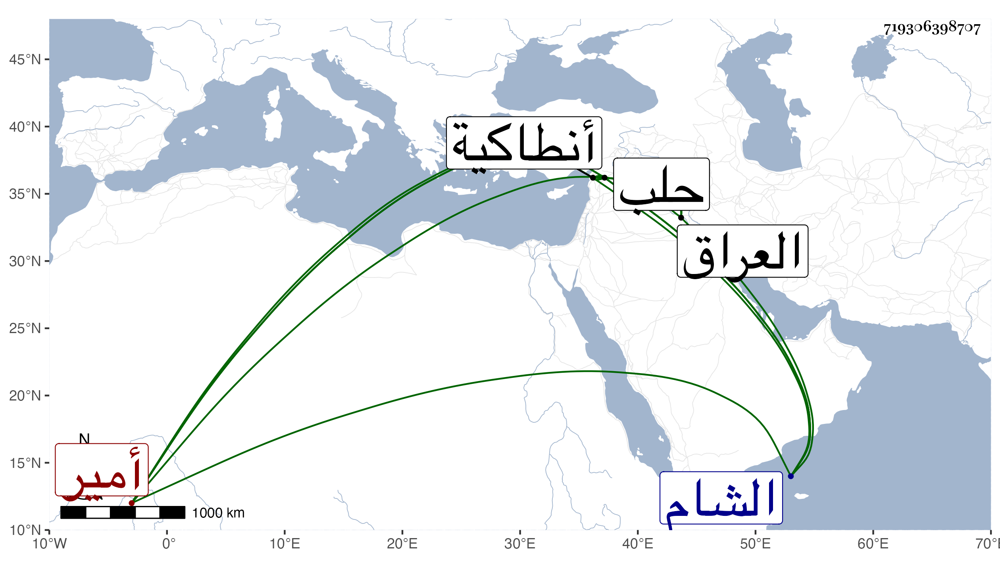

0902Sakhawi.DawLamic.ITO20230111-ara1.EIS1600.719306398707
Biography ID: 719306398707
500
العجل بن نعير بن حيار بن مهنا بن عيسى بن مهنا بن مانع بن حديثة ابن عصية بن فضل بن بدر بن ربيعة أمير آل فضل بالشام والعراق . نشأ في حجر أبيه فلما جاز العشرين خرج عن طاعته ثم لما كان جكم بحلب وخرج لقتال ابن صاحب الباز إلى جهة إنطاكية توجه إليه العجل نجدة له وآل الأمر إلى أن انكسر نعير وجيء به إلى جكم فلما رآه قال لابنه : انزل فقبل يد أبيك فجاء ليفعل فأعرض عنه أبوه ثم إن جكم رسم على نعير وجهزه إلى حلب واستمر العجل في خدمة جكم إلى أن توحش منه فهرب ولم يزل يحارب ويقاتل إلى أن قتل على يد طوخ في ربيع الأول سنة ست عشرة وحمل رأسه فعلق على باب قلعة حلب وسنه نحو ثلاثين سنة وبقتله انكسرت شوكة آل مهنا ويقال أنه كان عفيفا عن الفروج . ترجمه ابن خطيب الناصرية ثم شيخنا في إنبائه مطولا وقيل اسمه يوسف بن محمد فالله أعلم .
